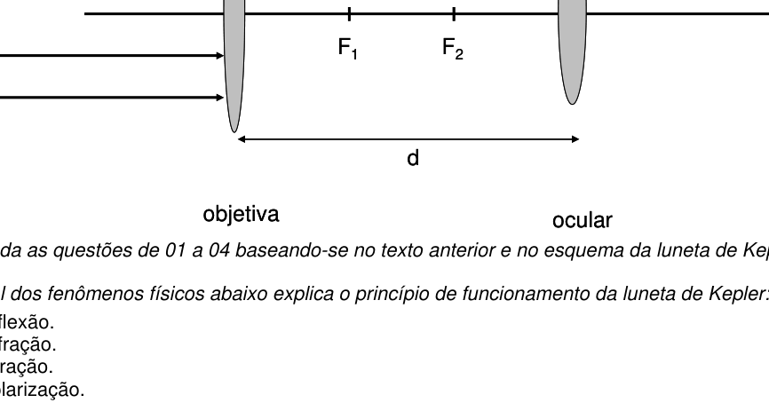
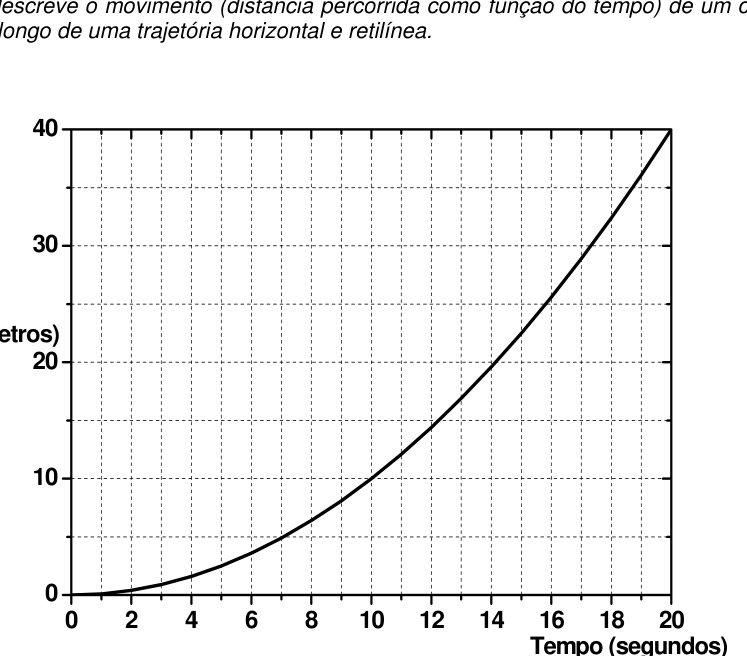
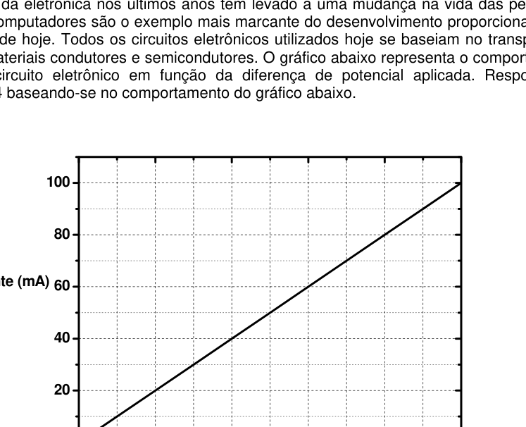
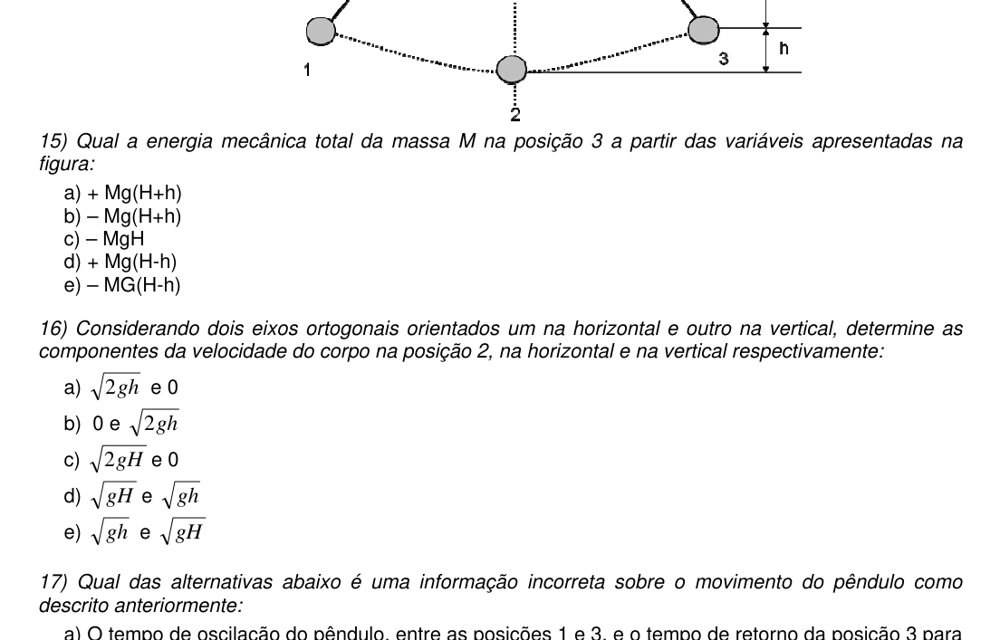
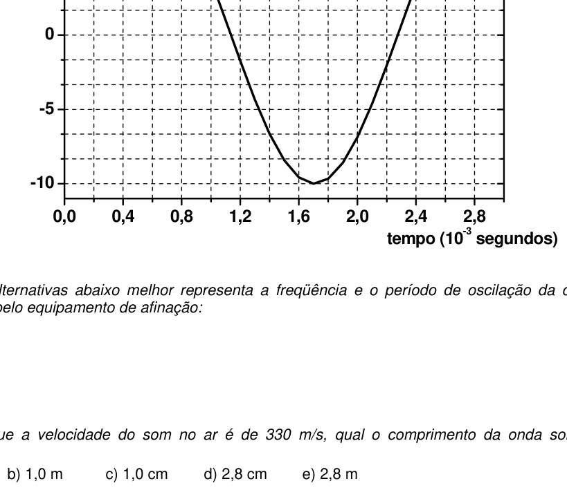

Sem dúvida nenhuma o grande avanço da Astronomia se deu com a invenção do telescópio (luneta). O telescópio recebeu inicialmente vários nomes: “perspicillum” (Galileu Galilei), “instrumentum” (Johannes Kepler), ou comumente referido como “spyglass”. A sua funcionalidade é obtida graças ao uso de um conjunto de no mínimo duas lentes. Um telescópio chamado de luneta de Kepler é formado por duas lentes convergentes, objetiva e ocular, de focos respectivos e com seus eixos ópticos alinhados sobre uma mesma reta. A lente que recebe a luz é chamada de objetiva e a outra denominada ocular. A distância entre as lentes é .
Responda as questões de 01 a 04 baseando-se no texto anterior e no esquema da luneta de Kepler.
01) Qual dos fenômenos físicos abaixo explica o princípio de funcionamento da luneta de Kepler:
- A. reflexão.
- B. refração.
- C. difração.
- D. polarização.
- E. dispersão.

Esquema luneta de Kepler objetiva-ocular F1 F2Topic: Geometric Optics Metodi: Ray Tracing, Thin Lens & Mirror Equation Competenze: Physical Reasoning, Diagrammatic Reasoning Objects: Lens Fonte: Testo (PDF) — p.2
Senza dubbio il grande progresso dell’astronomia è avvenuto con l’invenzione del telescopio (lune). Il telescopio ricevette inizialmente diversi nomi: “perspicillum” (Galileu Galilei), “instrumentum” (Johannes Kepler), o comunemente chiamato “spyglass”. La sua funzionalità è ottenuta grazie all’uso di un insieme di almeno due obiettivi. Un telescopio chiamato luneta di Kepler è costituito da due obiettivi convergenti, obiettivo e oculare, di foci rispettivi e con i loro assi ottici allineati su una stessa retta. L’obiettivo che riceve la luce è chiamato obiettivo e l’altro è chiamato oculare. La distanza tra le lenti è .
Rispondere alle domande 01-04 basandosi sul testo precedente e sullo schema della luna di Kepler.
Qual è il fenomeno fisico che spiega il principio di funzionamento della galassia di Kepler:
- A riflessione.
- B. rifrazione.
- C. difrazione.
- ** D ** polarizzazione.
- E. dispersione.
Schema lunetico di obiettivo-oculare Kepler F1 F2
Topic: Geometric Optics Metodi: Ray Tracing, Thin Lens & Mirror Equation Competenze: Physical Reasoning, Diagrammatic Reasoning Objects: Lens Fonte: Testo (PDF) — p.2
No doubt the great advance of astronomy came with the invention of the telescope (moon). The telescope was initially given several names: “perspicillum” (Galileu Galilei), “instrumentum” (Johannes Kepler), or commonly referred to as “spyglass”. Its functionality is achieved by using a set of at least two lenses. A telescope called a Kepler lens consists of two convergent lenses, objective and optical, of respective focuses and with their optical axes aligned on a single straight line. The lens that receives the light is called the lens and the other is called the eye. The distance between the lenses is .
Answer questions 01 to 04 based on the previous text and Kepler’s lunar chart.
Which of the following physical phenomena explains the principle of operation of the Kepler lunar system:
- A reflection of MSK1/.
- **B ** refraction.
- **C ** diffraction.
- ** D ** polarization.
- MSK0/>E** dispersion
The following is the list of the main types of data that are used in the field of data processing:
Topic: Geometric Optics Metodi: Ray Tracing, Thin Lens & Mirror Equation Competenze: Physical Reasoning, Diagrammatic Reasoning Objects: Lens Fonte: Testo (PDF) — p.2
02) Pode se afirmar com absoluta certeza que feixes incidindo paralelos ao eixo óptico da objetiva:
- A. convergirão para o ponto focal .
- B. convergirão para o ponto focal .
- C. convergirão para o ponto medido a partir da objetiva sobre o eixo óptico.
- D. convergirão para o ponto medido a partir da objetiva sobre o eixo óptico.
- E. nesta particular situação os feixes não convergem para nenhum ponto.
Topic: Geometric Optics Metodi: Ray Tracing, Thin Lens & Mirror Equation Competenze: Physical Reasoning, Diagrammatic Reasoning Objects: Lens Fonte: Testo (PDF) — p.2
**02) ** Si può affermare con assoluta certezza che i fasci incidendo in parallelo all’asse ottico dell’obiettivo:
- A convergeranno al punto focale .
- B. convergeranno al punto focale .
- C. convergono al punto misurato dall’obiettivo sull’asse ottico.
- D. convergono al punto misurato dall’obiettivo sull’asse ottico.
- **E ** in questa situazione particolare i fasci non convergono in nessun punto.
Topic: Geometric Optics Metodi: Ray Tracing, Thin Lens & Mirror Equation Competenze: Physical Reasoning, Diagrammatic Reasoning Objects: Lens Fonte: Testo (PDF) — p.2
It can be stated with absolute certainty that beams touching parallel to the optical axis of the lens:
- A converge to the focal point .
- **B ** converge to the focal point .
- C. converge to the point measured from the lens on the optical axis.
- D. converge to the point measured from the lens on the optical axis.
- **E ** in this particular situation the beams do not converge to any point.
Topic: Geometric Optics Metodi: Ray Tracing, Thin Lens & Mirror Equation Competenze: Physical Reasoning, Diagrammatic Reasoning Objects: Lens Fonte: Testo (PDF) — p.2
03) Quando temos a seguinte condição , podemos afirmar que:
- A. os raios divergem com relação ao eixo óptico após atravessar a ocular.
- B. os raios emergem paralelos ao eixo óptico após atravessar a ocular.
- C. nesta particular situação os raios divergem ao atravessar a objetiva e não atingirão a ocular.
- D. os raios serão focalizados no ponto sobre o eixo óptico medido a partir da objetiva.
- E. os raios convergirão ao atravessarem a ocular.
Topic: Geometric Optics Metodi: Ray Tracing, Thin Lens & Mirror Equation Competenze: Physical Reasoning, Mathematical Modeling Objects: Lens Fonte: Testo (PDF) — p.2
Quando abbiamo la condizione , possiamo affermare che:
- A. i raggi divergono rispetto all’asse ottico dopo aver attraversato l’occhio.
- B. i raggi emergono paralleli all’asse ottico dopo aver attraversato l’oculare.
- C. in questa particolare situazione i raggi divergono nel passare attraverso l’obiettivo e non raggiungono l’occhio.
- D. i raggi saranno focalizzati al punto sul punto ottico misurato dall’obiettivo.
- I raggi convergono attraverso l’occhio.
Topic: Geometric Optics Metodi: Ray Tracing, Thin Lens & Mirror Equation Competenze: Physical Reasoning, Mathematical Modeling Objects: Lens Fonte: Testo (PDF) — p.2
**03) ** When we have the following condition , we can say that:
- A the rays diverge from the optical axis after crossing the eye.
- B. the rays emerge parallel to the optical axis after crossing the eyelid.
- C. in this particular situation the rays diverge as they pass through the lens and will not reach the eye.
- D. the beams shall be focused at on the optical axis measured from the lens. The rays will converge as they pass through the eye.
Topic: Geometric Optics Metodi: Ray Tracing, Thin Lens & Mirror Equation Competenze: Physical Reasoning, Mathematical Modeling Objects: Lens Fonte: Testo (PDF) — p.2
04) Suponhamos o conjunto de lentes na condição em que cm, cm e cm. Onde será formada a imagem do conjunto de lentes nesta configuração:
- A. à 10 cm da ocular.
- B. à 10 cm da objetiva.
- C. à 20 cm da ocular.
- D. à 30 cm da ocular.
- E. não há formação da imagem.
Topic: Geometric Optics Metodi: Thin Lens & Mirror Equation, Ray Tracing Competenze: Mathematical Modeling, Physical Reasoning Objects: Lens Fonte: Testo (PDF) — p.2
Supponiamo che il set di lenti sia in grado di ottenere cm, cm e cm. dove si formerà l’immagine del sistema di occhiali in questa configurazione:
- A a 10 cm dall’occhio.
- **B ** a 10 cm dal miraglio.
- C. a 20 cm dall’occhio.
- **D ** a 30 cm dall’occhio.
- E. non si presenta alcuna formazione dell’immagine.
Topic: Geometric Optics Metodi: Thin Lens & Mirror Equation, Ray Tracing Competenze: Mathematical Modeling, Physical Reasoning Objects: Lens Fonte: Testo (PDF) — p.2
**04) ** Suppose the lens set in the condition that cm, cm and cm. Where the image of the lens set will be formed in this configuration:
- A 10 cm from the eyelid.
- B 10 cm from the lens.
- C 20 cm from the eyelid.
- ** D** 30 cm from the eyelid.
- **E ** there is no image formation.
Topic: Geometric Optics Metodi: Thin Lens & Mirror Equation, Ray Tracing Competenze: Mathematical Modeling, Physical Reasoning Objects: Lens Fonte: Testo (PDF) — p.2
O gráfico a seguir descreve o movimento (distância percorrida como função do tempo) de um corpo de massa kg ao longo de uma trajetória horizontal e retilínea. O eixo horizontal representa o tempo (segundos) de 0 a 20 s e o eixo vertical representa a distância (metros) de 0 a 40 m.
Responda as questões de 05 a 09 baseando-se no gráfico anterior.
05) Qual a velocidade média do corpo durante o percurso:
- A. 1,0 m/s
- B. 2,0 m/s
- C. 3,0 m/s
- D. 4,0 m/s
- E. 5,0 m/s

Distância vs tempo corpo M=10 kgTopic: Newtonian Mechanics Metodi: Kinematic Equations Competenze: Physical Reasoning, Graph Linearization Objects: Block Fonte: Testo (PDF) — p.3
Il grafico seguente descrive il movimento (distanza percorsa in funzione del tempo) di un corpo di massa kg lungo un percorso orizzontale e reticolo. L’asse orizzontale rappresenta il tempo (secondi) da 0 a 20 s e l’asse verticale rappresenta la distanza (metri) da 0 a 40 m.
Rispondere alle domande 05-09 sulla base del grafico precedente.
**05) ** Qual è la velocità media del corpo durante il percorso:
- A. 1,0 m/s
- B. 2,0 m/s
- C. 3,0 m/s
- D. 4,0 m/s
- E. 5,0 m/s
Distanza vs tempo corpo M=10 kg
Topic: Newtonian Mechanics Metodi: Kinematic Equations Competenze: Physical Reasoning, Graph Linearization Objects: Block Fonte: Testo (PDF) — p.3
The following graph describes the movement (distance travelled as a function of time) of a body of mass kg along a horizontal and reticulated trajectory. The horizontal axis represents the time (seconds) from 0 to 20 s and the vertical axis represents the distance (meters) from 0 to 40 m.
Answer questions 05 to 09 based on the chart above.
**05) ** What is the average body speed during the journey:
- A. 1,0 m/s
- B. 2,0 m/s
- C. 3,0 m/s
- D. 4,0 m/s
- E. 5,0 m/s
The distance vs body time M=10 kg
Topic: Newtonian Mechanics Metodi: Kinematic Equations Competenze: Physical Reasoning, Graph Linearization Objects: Block Fonte: Testo (PDF) — p.3
06) Qual das alternativas abaixo melhor representa a velocidade do móvel em 10 segundos:
- A. 10 m/s
- B. 15 m/s
- C. 2,0 m/s
- D. 5,0 m/s
- E. 30 m/s
Topic: Newtonian Mechanics Metodi: Kinematic Equations Competenze: Physical Reasoning, Graph Linearization Objects: Block Fonte: Testo (PDF) — p.3
**06) ** Qual è l’alternativa seguente che rappresenta meglio la velocità del mobile in 10 secondi:
- A. 10 m/s
- B. 15 m/s
- C. 2,0 m/s
- D. 5,0 m/s
- E. 30 m/s
Topic: Newtonian Mechanics Metodi: Kinematic Equations Competenze: Physical Reasoning, Graph Linearization Objects: Block Fonte: Testo (PDF) — p.3
**06) ** Which of the following alternatives best represents the mobile speed in 10 seconds:
- A. 10 m/s
- B. 15 m/s
- C. 2,0 m/s
- D. 5,0 m/s
- E. 30 m/s
Topic: Newtonian Mechanics Metodi: Kinematic Equations Competenze: Physical Reasoning, Graph Linearization Objects: Block Fonte: Testo (PDF) — p.3
07) Qual das equações abaixo representa o movimento (distância como função do tempo) descrito pelo gráfico anterior:
- A.
- B.
- C.
- D.
- E.
Topic: Newtonian Mechanics Metodi: Kinematic Equations Competenze: Mathematical Modeling, Physical Reasoning Objects: Block Fonte: Testo (PDF) — p.3
**07) ** Qual è la seguente equazione che rappresenta il movimento (distanza a funzione del tempo) descritto dal grafico precedente:
- A.
- B.
- C.
- D.
- E.
Topic: Newtonian Mechanics Metodi: Kinematic Equations Competenze: Mathematical Modeling, Physical Reasoning Objects: Block Fonte: Testo (PDF) — p.3
**07) ** Which of the following equations represents the motion (distance as a function of time) described in the above graph:
- A.
- B.
- C.
- D.
- E.
Topic: Newtonian Mechanics Metodi: Kinematic Equations Competenze: Mathematical Modeling, Physical Reasoning Objects: Block Fonte: Testo (PDF) — p.3
08) Qual é a força que atua neste corpo durante o movimento:
- A. 1 N
- B. 2 N
- C. 3 N
- D. 4 N
- E. 5 N
Topic: Newtonian Mechanics Metodi: Free-Body Diagram, Kinematic Equations Competenze: Physical Reasoning, Mathematical Modeling Objects: Block Fonte: Testo (PDF) — p.3
Qual è la forza che agisce in questo corpo durante il movimento:
- A. 1 N
- B. 2 N
- C. 3 N
- D. 4 N
- E. 5 N
Topic: Newtonian Mechanics Metodi: Free-Body Diagram, Kinematic Equations Competenze: Physical Reasoning, Mathematical Modeling Objects: Block Fonte: Testo (PDF) — p.3
What force is acting on this body during movement:
- A. 1 N
- B. 2 N
- C. 3 N
- D. 4 N
- E. 5 N
Topic: Newtonian Mechanics Metodi: Free-Body Diagram, Kinematic Equations Competenze: Physical Reasoning, Mathematical Modeling Objects: Block Fonte: Testo (PDF) — p.3
09) Considere um segundo corpo saindo a 30 m de distância em e em sentido oposto com velocidade constante. Qual o tempo de colisão entre os dois corpos, medido a partir de , sabendo que o corpo 2 chegaria ao ponto de partida do corpo 1 em 20 s caso os dois não colidissem.
- A. 11,4 s
- B. 9,1 s
- C. 3 s
- D. 6,8 s
- E. 6,7 s
Topic: Newtonian Mechanics Metodi: Kinematic Equations, Conservation of Momentum Competenze: Physical Reasoning, Mathematical Modeling Objects: Block Fonte: Testo (PDF) — p.3
**09) ** Considerate un secondo corpo che esce a 30 m di distanza in e in direzione opposta a velocità costante. Qual è il tempo di colpissione tra i due corpi, misurato a partire da , sapendo che il corpo 2 raggiungerebbe il punto di partenza del corpo 1 in 20 secondi se i due non collassassero.
- A. 11,4 s
- B. 9,1 s
- C. 3 s
- D. 6,8 s
- E. 6,7 s
Topic: Newtonian Mechanics Metodi: Kinematic Equations, Conservation of Momentum Competenze: Physical Reasoning, Mathematical Modeling Objects: Block Fonte: Testo (PDF) — p.3
**09) ** Consider a second body coming out 30 m away at and in the opposite direction at constant speed. What is the collision time between the two bodies, measured from , knowing that body 2 would reach the body 1 starting point in 20 seconds if the two did not collide.
- A. 11,4 s
- B. 9,1 s
- C. 3 s
- D. 6,8 s
- E. 6,7 s
Topic: Newtonian Mechanics Metodi: Kinematic Equations, Conservation of Momentum Competenze: Physical Reasoning, Mathematical Modeling Objects: Block Fonte: Testo (PDF) — p.3
O desenvolvimento da eletrônica nos últimos anos tem levado a uma mudança na vida das pessoas e da sociedade. Os computadores são o exemplo mais marcante do desenvolvimento proporcionado pela eletrônica nos dias de hoje. Todos os circuitos eletrônicos utilizados hoje se baseiam no transporte de carga através de materiais condutores e semicondutores. O gráfico abaixo representa o comportamento da corrente num circuito eletrônico em função da diferença de potencial aplicada. Responda às questões de 10 a 14 baseando-se no comportamento do gráfico abaixo.
O eixo horizontal representa a diferença de potencial (volts) de 0 a 10 V e o eixo vertical representa a corrente (mA) de 0 a 100 mA.
10) A geração de chips Pentium III da Intel possui cerca de dez milhões de transistores num quadrado com cinco milímetros de lado. Tendo como base esta informação, qual a ordem de grandeza da área que ocupa um único transistor:
- A. m²
- B. m²
- C. mm²
- D. m²
- E. m²

Corrente vs diferença de potencial circuito eletrônicoTopic: Order-of-Magnitude Estimation, Circuits Metodi: Order-of-Magnitude Estimation, Dimensional Analysis Competenze: Estimation & Approximation, Physical Reasoning Objects: — Fonte: Testo (PDF) — p.4
Lo sviluppo dell’elettronica negli ultimi anni ha portato a un cambiamento nella vita delle persone e della società. I computer sono l’esempio più evidente dello sviluppo fornito dall’elettronica di oggi. Tutti i circuiti elettronici oggi utilizzati si basano sul trasporto di carichi attraverso materiali conduttori e semiconduttori. Il grafico seguente rappresenta il comportamento del corrente in un circuito elettronico in funzione della differenza di potenziale applicata. Rispondi alle domande da 10 a 14 basandosi sul comportamento del grafico qui sotto.
L’asse orizzontale rappresenta la differenza di potenziale (volts) da 0 a 10 V e l’asse verticale rappresenta il corrente (mA) da 0 a 100 mA.
La generazione di chip Pentium III di Intel ha circa 10 milioni di transistor in un quadrato di 5 millimetri laterali. Sulla base di queste informazioni, quale è l’ordine di grandezza dell’area occupata da un singolo transistor:
- A. m²
- B. m²
- C. mm2
- D. m²
- E. m²
Corrente vs differenza di potenziale di circuito elettronico
Topic: Order-of-Magnitude Estimation, Circuits Metodi: Order-of-Magnitude Estimation, Dimensional Analysis Competenze: Estimation & Approximation, Physical Reasoning Objects: — Fonte: Testo (PDF) — p.4
The development of electronics in recent years has led to a change in people’s lives and in society. Computers are the most striking example of the development that electronics provide these days. All electronic circuits used today are based on the transport of cargo through conductive and semiconductor materials. The following graph shows the behavior of the current in an electronic circuit as a function of the applied potential difference. Answer questions 10 to 14 based on the behavior in the chart below.
The horizontal axis represents the potential difference (volts) of 0 to 10 V and the vertical axis represents the current (mA) of 0 to 100 mA.
Intel’s Pentium III generation of chips has about ten million transistors in a square with five millimeters of side. Based on this information, what is the order of magnitude of the area occupied by a single transistor:
- A. m²
- B. m²
- **C ** mm2
- D. m²
- E. m²
The following shall be reported in the table:
Topic: Order-of-Magnitude Estimation, Circuits Metodi: Order-of-Magnitude Estimation, Dimensional Analysis Competenze: Estimation & Approximation, Physical Reasoning Objects: — Fonte: Testo (PDF) — p.4
11) O comportamento observado no circuito equivalente, representado pelo gráfico acima, é conhecido como:
- A. balístico.
- B. dielétrico.
- C. capacitivo.
- D. indutivo.
- E. ôhmico.
Topic: Circuits Metodi: Kirchhoff’s Laws, Equivalent Circuit Reduction Competenze: Physical Reasoning, Diagrammatic Reasoning Objects: Resistor Fonte: Testo (PDF) — p.4
**11) ** Il comportamento osservato nel circuito equivalente, rappresentato dal grafico sopra, è noto come:
- MSK1/ balistico.
- **B ** dieletrico.
- **C ** capacitivo.
- **D ** induttivo.
- ** E ** omico.
Topic: Circuits Metodi: Kirchhoff’s Laws, Equivalent Circuit Reduction Competenze: Physical Reasoning, Diagrammatic Reasoning Objects: Resistor Fonte: Testo (PDF) — p.4
The behaviour observed in the equivalent circuit, represented by the graph above, is known as:
- A ballistic missile.
- M1 and M2
- Capacity of the MSK1
- The inductive M.S.K.
- MSK1 / E
Topic: Circuits Metodi: Kirchhoff’s Laws, Equivalent Circuit Reduction Competenze: Physical Reasoning, Diagrammatic Reasoning Objects: Resistor Fonte: Testo (PDF) — p.4
12) Qual o valor da resistência equivalente do circuito em (Ohm):
- A. 1
- B. 10
- C. 100
- D. 0,1
- E. 0,001
Topic: Circuits Metodi: Kirchhoff’s Laws, Equivalent Circuit Reduction Competenze: Mathematical Modeling, Physical Reasoning Objects: Resistor Fonte: Testo (PDF) — p.4
**12) ** Qual è il valore della resistenza equivalente del circuito in (Ohm):
- A. 1
- B. 10
- C. 100
- D. 0,1
- E. 0,001
Topic: Circuits Metodi: Kirchhoff’s Laws, Equivalent Circuit Reduction Competenze: Mathematical Modeling, Physical Reasoning Objects: Resistor Fonte: Testo (PDF) — p.4
**12) ** What is the value of the equivalent resistance of the circuit in (Ohm):
- A. 1
- B. 10
- C. 100
- D. 0,1
- E. 0,001
Topic: Circuits Metodi: Kirchhoff’s Laws, Equivalent Circuit Reduction Competenze: Mathematical Modeling, Physical Reasoning Objects: Resistor Fonte: Testo (PDF) — p.4
13) Qual a potência dissipada no elemento resistivo equivalente quando este circuito opera com uma corrente de 60 mA:
- A. 36 W
- B. 60 W
- C. 3,6 W
- D. 0,36 W
- E. 6 W
Topic: Circuits Metodi: Kirchhoff’s Laws, Energy Conservation Method Competenze: Mathematical Modeling, Physical Reasoning Objects: Resistor Fonte: Testo (PDF) — p.5
**13) ** Qual è la potenza dissipata nell’elemento resistente equivalente quando questo circuito opera con una corrente di 60 mA:
- A. 36 W
- B. 60 W
- C. 3,6 W
- D. 0,36 W
- E. 6 W
Topic: Circuits Metodi: Kirchhoff’s Laws, Energy Conservation Method Competenze: Mathematical Modeling, Physical Reasoning Objects: Resistor Fonte: Testo (PDF) — p.5
**13) ** What is the power dissipated in the equivalent resistance element when this circuit operates with a current of 60 mA:
- A. 36 W
- B. 60 W
- C. 3,6 W
- D. 0,36 W
- E. 6 W
Topic: Circuits Metodi: Kirchhoff’s Laws, Energy Conservation Method Competenze: Mathematical Modeling, Physical Reasoning Objects: Resistor Fonte: Testo (PDF) — p.5
14) Qual a energia consumida pelo circuito, operando na potência máxima que pode ser obtida no gráfico, durante uma hora.
- A. 1 J
- B. 3,6 J
- C. 3,6 kJ
- D. 1 kJ
- E. 10 J
Topic: Circuits, Conservation of Energy Metodi: Energy Conservation Method, Kirchhoff’s Laws Competenze: Physical Reasoning, Unit Conversion Objects: Resistor Fonte: Testo (PDF) — p.5
**14) ** Qual è l’energia consumata dal circuito, operando alla potenza massima che può essere ottenuta nel grafico, per un’ora.
- A. 1 J
- B. 3,6 J
- C. 3,6 kJ
- D. 1 kJ
- E. 10 J
Topic: Circuits, Conservation of Energy Metodi: Energy Conservation Method, Kirchhoff’s Laws Competenze: Physical Reasoning, Unit Conversion Objects: Resistor Fonte: Testo (PDF) — p.5
**14) ** What is the power consumed by the circuit, operating at the maximum power that can be obtained in the graph, for one hour.
- A. 1 J
- B. 3,6 J
- C. 3,6 kJ
- D. 1 kJ
- E. 10 J
Topic: Circuits, Conservation of Energy Metodi: Energy Conservation Method, Kirchhoff’s Laws Competenze: Physical Reasoning, Unit Conversion Objects: Resistor Fonte: Testo (PDF) — p.5
Um pêndulo simples é composto por um fio inextensível (de massa desprezível), comprimento , no qual é pendurado um corpo de massa . O pêndulo é utilizado desde a antiguidade como um instrumento de padrão de tempo. Da posição 1 a massa é solta, a partir do repouso, oscila até o ponto 3, passando pelo ponto 2 que é a posição onde este se encontra alinhado com a vertical. e representam distâncias a partir do ponto onde o pêndulo é fixo até o ponto 2, é a aceleração gravitacional e é o deslocamento angular entre 1 e 3, conforme a figura a seguir. Desconsidere a ação de qualquer tipo de forças de atrito neste sistema.
Responda as questões de 15 a 17.
15) Qual a energia mecânica total da massa na posição 3 a partir das variáveis apresentadas na figura:
- A.
- B.
- C.
- D.
- E.

Pêndulo simples posições 1, 2, 3 com H, h, 2θTopic: Oscillations & Waves, Conservation of Energy Metodi: Energy Conservation Method, Conservation of Energy Competenze: Physical Reasoning, Diagrammatic Reasoning Objects: Pendulum Fonte: Testo (PDF) — p.5
Un semplice pendolo è costituito da un filo inestensibile (di massa scarsa) di lunghezza , su cui è appeso un corpo di massa . Il pendolo è stato utilizzato fin dall’antichità come strumento di tempo standard. Dal punto 1 la massa è rilasciata, dal riposo oscilla fino al punto 3, passando per il punto 2, che è la posizione in cui si trova allineato alla verticale. e rappresentano le distanze dal punto in cui il pendolo è fisso fino al punto 2, è l’accelerazione gravitazionale e è il spostamento angolare tra 1 e 3, come riportato nella figura seguente. Non considerare l’azione di qualsiasi tipo di forza di attrito in questo sistema.
Rispondi alle domande 15-17.
**15) ** Qual è la totale energia meccanica della massa di voce 3 a partire dalle variabili riportate in figura:
- A.
- B.
- C.
- D.
- E.
Pensolo semplice posizioni 1, 2, 3 con H, h, 2θ
Topic: Oscillations & Waves, Conservation of Energy Metodi: Energy Conservation Method, Conservation of Energy Competenze: Physical Reasoning, Diagrammatic Reasoning Objects: Pendulum Fonte: Testo (PDF) — p.5
A simple pendulum is made up of an unstretchable wire (of negligible mass) in length, on which a body of mass is suspended. The pendulum has been used since ancient times as a time-standard instrument. From position 1 the mass is released, from the resting position it oscillates to point 3, passing through point 2, which is the position where it is aligned with the vertical. and represent distances from the point where the pendulum is fixed to point 2, is the gravitational acceleration and is the angular displacement between 1 and 3, as shown in the following figure. Disregard the action of any friction forces in this system.
Answer the questions 15 to 17.
**15) ** What is the total mechanical energy of the mass in heading 3 from the variables shown in Figure:
- A.
- B.
- C.
- D.
- E.
Simple pendulum positions 1, 2, 3 with H, h, 2θ
Topic: Oscillations & Waves, Conservation of Energy Metodi: Energy Conservation Method, Conservation of Energy Competenze: Physical Reasoning, Diagrammatic Reasoning Objects: Pendulum Fonte: Testo (PDF) — p.5
16) Considerando dois eixos ortogonais orientados um na horizontal e outro na vertical, determine as componentes da velocidade do corpo na posição 2, na horizontal e na vertical respectivamente:
- A. e
- B. e
- C. e
- D. e
- E. e
Topic: Oscillations & Waves, Conservation of Energy, Newtonian Mechanics Metodi: Energy Conservation Method, Vector Decomposition Competenze: Physical Reasoning, Mathematical Modeling Objects: Pendulum Fonte: Testo (PDF) — p.5
**16) ** Considerando due assi ortogonali orientati orizzontalmente e verticalmente, determinare i componenti della velocità del corpo in posizione 2, orizzontale e verticale rispettivamente:
- A. e
- B. e
- C. e
- D. e
- E. e
Topic: Oscillations & Waves, Conservation of Energy, Newtonian Mechanics Metodi: Energy Conservation Method, Vector Decomposition Competenze: Physical Reasoning, Mathematical Modeling Objects: Pendulum Fonte: Testo (PDF) — p.5
**16) ** Considering two orthogonal axes oriented horizontally and vertically, determine the components of the body speed at position 2, horizontally and vertically respectively:
- A. e
- B. e
- C. e
- D. e
- E. e
Topic: Oscillations & Waves, Conservation of Energy, Newtonian Mechanics Metodi: Energy Conservation Method, Vector Decomposition Competenze: Physical Reasoning, Mathematical Modeling Objects: Pendulum Fonte: Testo (PDF) — p.5
17) Qual das alternativas abaixo é uma informação incorreta sobre o movimento do pêndulo como descrito anteriormente:
- A. O tempo de oscilação do pêndulo, entre as posições 1 e 3, e o tempo de retorno da posição 3 para 1 são iguais.
- B. A massa tem velocidade máxima na posição 2.
- C. quanto maior for a massa , menor será o tempo gasto para percorrer o percurso de 1 a 3.
- D. na posição 3 a velocidade da massa é nula.
- E. quanto maior o comprimento maior será o tempo de oscilação entre as posições 1 e 3.
Topic: Oscillations & Waves, Newtonian Mechanics Metodi: Simple Harmonic Motion Analysis, Energy Conservation Method Competenze: Physical Reasoning, Diagrammatic Reasoning Objects: Pendulum Fonte: Testo (PDF) — p.6
**17) ** Qual è l’alternativa seguente che fornisce informazioni errate sul movimento del pendolo come descritto sopra:
- A. Il tempo di oscillazione del pendolo tra le posizioni 1 e 3 e il tempo di ritorno da posizione 3 a 1 sono uguali.
- B. La massa ha la massima velocità nella posizione 2.
- C. più grande è la massa , meno tempo sarà impiegato per percorrere il percorso da 1 a 3.
- D. in posizione 3 la velocità di massa è zero.
- E. più è lungo più è grande il tempo di oscillazione tra le posizioni 1 e 3.
Topic: Oscillations & Waves, Newtonian Mechanics Metodi: Simple Harmonic Motion Analysis, Energy Conservation Method Competenze: Physical Reasoning, Diagrammatic Reasoning Objects: Pendulum Fonte: Testo (PDF) — p.6
**17) ** Which of the alternatives below is incorrect information about the movement of the pendulum as described above:
- A. The pendulum oscillation time between positions 1 and 3 and the return time from position 3 to 1 are equal.
- B. The mass has maximum speed at position 2.
- C. the greater the mass , the less time it will take to travel the route 1 to 3.
- D. in position 3 the mass speed is zero.
- E. The longer the length the longer the oscillation time between positions 1 and 3.
Topic: Oscillations & Waves, Newtonian Mechanics Metodi: Simple Harmonic Motion Analysis, Energy Conservation Method Competenze: Physical Reasoning, Diagrammatic Reasoning Objects: Pendulum Fonte: Testo (PDF) — p.6
Um piano é afinado com um instrumento de sopro que produz uma nota Lá pura. Um microfone detecta o sinal sonoro e o registra em um instrumento eletrônico. O gráfico abaixo representa o sinal sonoro (em unidades arbitrárias (ua)) registrado pelo microfone como função do tempo (em s). O eixo horizontal representa o tempo de 0 a 2,8 ms e o eixo vertical a amplitude de a ua.
Responda as questões de 18 a 20 baseando-se no gráfico.
18) Qual das alternativas abaixo melhor representa a frequência de oscilação da onda sonora emitida pelo instrumento de afinação:
- A. 285 Hz
- B. 540 Hz
- C. 500 Hz
- D. 405 Hz
- E. 436 Hz

Sinal sonoro ua vs tempo 0–2,8 ms nota LáTopic: Oscillations & Waves Metodi: Wave Equation, Simple Harmonic Motion Analysis Competenze: Physical Reasoning, Graph Linearization Objects: — Fonte: Testo (PDF) — p.6
Un pianoforte è affine con un soprano che produce una nota pura. Un microfono rileva il segnale sonoro e lo registra su uno strumento elettronico. Il grafico seguente rappresenta il segnale sonoro (in unità arbitrarie (ua)) registrato dal microfono in funzione del tempo (in s). L’asse orizzontale rappresenta il tempo da 0 a 2,8 ms e l’asse verticale la larghezza da a ua.
Rispondi alle domande da 18 a 20 basandosi sul grafico.
**18) ** Qual è l’alternativa seguente che rappresenta meglio la frequenza di oscillazione dell’onda sonora emessa dall’impianto di sintonia:
- A. 285 Hz
- B. 540 Hz
- C. 500 Hz
- D. 405 Hz
- E. 436 Hz
Signal suono uà vs tempo 02,8 ms nota Là
Topic: Oscillations & Waves Metodi: Wave Equation, Simple Harmonic Motion Analysis Competenze: Physical Reasoning, Graph Linearization Objects: — Fonte: Testo (PDF) — p.6
A piano is tuned with a blowing instrument that produces a pure La note. A microphone detects the sound signal and records it on an electronic instrument. The following graph represents the sound signal (in arbitrary units (ua)) recorded by the microphone as a function of time (in s). The horizontal axis represents the time from 0 to 2,8 ms and the vertical axis the amplitude from to ua.
Answer questions 18 to 20 based on the chart.
**18) ** Which of the following alternatives best represents the frequency of oscillation of the sound wave emitted by the tuning instrument:
- A. 285 Hz
- B. 540 Hz
- C. 500 Hz
- D. 405 Hz
- E. 436 Hz
Sound signal and time 02.8 ms note There*
Topic: Oscillations & Waves Metodi: Wave Equation, Simple Harmonic Motion Analysis Competenze: Physical Reasoning, Graph Linearization Objects: — Fonte: Testo (PDF) — p.6
19) Sabendo que a velocidade do som no ar é de 330 m/s, qual o comprimento de onda da onda sonora detectada:
- A. 0,76 m
- B. 1,0 m
- C. 1,0 cm
- D. 2,8 cm
- E. 2,8 m
Topic: Oscillations & Waves Metodi: Wave Equation Competenze: Physical Reasoning, Unit Conversion Objects: — Fonte: Testo (PDF) — p.6
**19) ** Sapendo che la velocità del suono in aria è di 330 m/s, qual è la lunghezza d’onda dell’onda sonora rilevata:
- A. 0,76 m
- B. 1,0 m
- C. 1,0 cm
- D. 2,8 cm
- E. 2,8 m
Topic: Oscillations & Waves Metodi: Wave Equation Competenze: Physical Reasoning, Unit Conversion Objects: — Fonte: Testo (PDF) — p.6
**19) ** Knowing that the speed of sound in the air is 330 m/s, what the wavelength of the sound wave detected is:
- A. 0,76 m
- B. 1,0 m
- C. 1,0 cm
- D. 2,8 cm
- E. 2,8 m
Topic: Oscillations & Waves Metodi: Wave Equation Competenze: Physical Reasoning, Unit Conversion Objects: — Fonte: Testo (PDF) — p.6
20) Sabendo que o instrumento eletrônico tem um atraso na detecção do sinal sonoro equivalente a um acréscimo na fase de 20°, qual é o atraso em tempo entre a produção do som e a sua detecção:
- A. 0,76 ms
- B. 0,13 ms
- C. 1,0 ms
- D. 2,0 ms
- E. 0,75 ms
Topic: Oscillations & Waves Metodi: Wave Equation, Simple Harmonic Motion Analysis Competenze: Physical Reasoning, Mathematical Modeling Objects: — Fonte: Testo (PDF) — p.7
Sapendo che l’apparecchio elettronico ha un ritardo nel rilevamento del segnale sonoro equivalente ad un incremento nella fase di 20°, che è il ritardo in tempo tra la produzione del suono e il suo rilevamento:
- A. 0,76 ms
- B. 0,13 ms
- C. 1,0 ms
- D. 2,0 ms
- E. 0,75 ms
Topic: Oscillations & Waves Metodi: Wave Equation, Simple Harmonic Motion Analysis Competenze: Physical Reasoning, Mathematical Modeling Objects: — Fonte: Testo (PDF) — p.7
**20) ** Knowing that the electronic instrument has a delay in detecting the sound signal equivalent to an increase in the 20° phase, which is the time delay between sound production and its detection:
- A. 0,76 ms
- B. 0,13 ms
- C. 1,0 ms
- D. 2,0 ms
- E. 0,75 ms
Topic: Oscillations & Waves Metodi: Wave Equation, Simple Harmonic Motion Analysis Competenze: Physical Reasoning, Mathematical Modeling Objects: — Fonte: Testo (PDF) — p.7